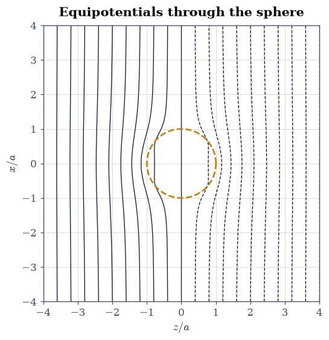
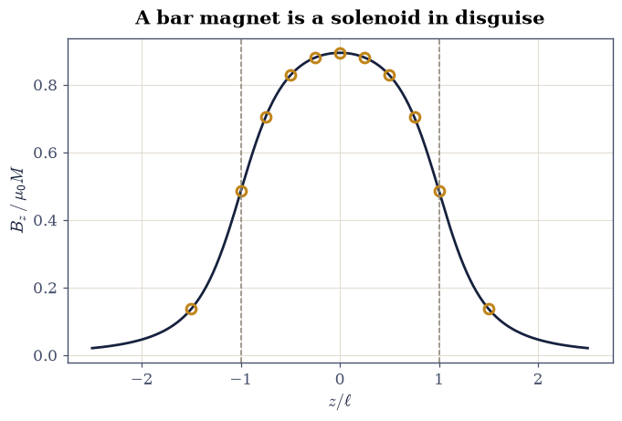
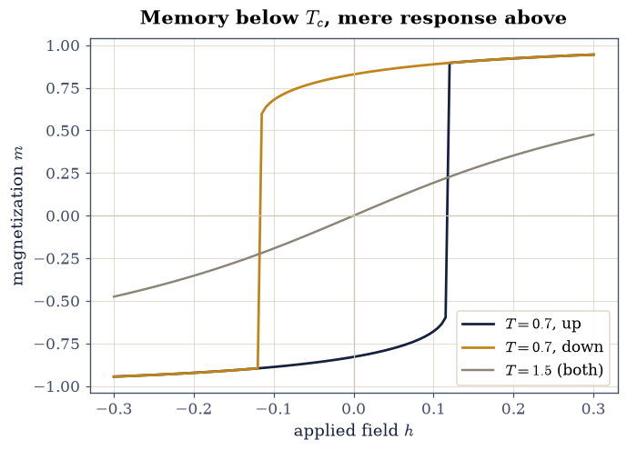

3.13 Fields in Matter: Dielectrics, Polarization, and Magnetic Materials#
Notebook overview#
Twelve notebooks of this volume have treated charges and currents in vacuum, but almost every field most of us ever meet lives inside matter: the dielectric in a capacitor, the water around an ion, the iron in a transformer core. Matter responds — its molecules polarize, its atomic moments align — and the response re-sources the very field that caused it, a self-consistency that produces some of electromagnetism’s most elegant exact results and, in the magnetic case, genuine memory. This coda works both chapters of that story ([Gri17] chapters 4 and 6, in the volume’s SI conventions), computationally.
The arc runs from bookkeeping to response. First bound charges, which sound like an accounting fiction and are entirely real: we sum them over a polarized sphere’s surface and recover the exact interior field. Then the classic boundary-value problem of the subject — the dielectric sphere in a uniform field — solved numerically with a permittivity-jump relaxation solver descended from §3.4, against Griffiths’ exact \(3E_0/(\varepsilon_r + 2)\), with the discretization systematics faced honestly rather than hidden. The Clausius–Mossotti relation then closes the microscopic loop (one measured atomic polarizability predicts argon’s bulk permittivity to the percent), and the finale crosses to magnetism, where the same self-consistency run below its critical temperature stops being a correction and becomes hysteresis — memory in a material, on the mean-field machinery this course builds for the Ising model in §5.10.
A note on reading the checks in this notebook: a validation compares a result to an expected physical fact. A ✗ does not by itself mean the answer is wrong; it means the output did not match what the check expected, which may be a genuine error, a different-but-valid convention, or too tight a tolerance. Treat a ✗ as a prompt to locate the discrepancy. Passing is strong evidence, not proof.
Theory in brief#
Polarization and bound charge. When a field displaces the charges inside molecules, the material acquires a dipole-moment density \(\mathbf P\) (the polarization, \(\mathrm{C/m^2}\)). The net effect of all those microscopic dipoles is exactly reproduced by bound charge densities
surface charge where the polarization ends, volume charge where it is non-uniform. These are not a metaphor: for a uniformly polarized sphere the \(\sigma_b = P\cos\theta\) cap-and-belt pattern produces the famous uniform interior field \(\mathbf E = -\mathbf P/(3\varepsilon_0)\), a result we will obtain by literally summing the surface.
The auxiliary field and linear dielectrics. Splitting total charge into free and bound motivates \(\mathbf D = \varepsilon_0\mathbf E + \mathbf P\), with \(\nabla\cdot\mathbf D = \rho_f\): Gauss’s law with only the charge one controls. In a linear dielectric \(\mathbf P = \varepsilon_0\chi_e\mathbf E\), so \(\mathbf D = \varepsilon\mathbf E\) with \(\varepsilon = \varepsilon_0(1 + \chi_e) \equiv \varepsilon_0\varepsilon_r\), and the electrostatics of matter becomes one equation,
Laplace’s equation with a position-dependent coefficient. At an interface the jump conditions follow: \(D_\perp\) continuous (no free surface charge) and \(E_\parallel\) continuous. The showpiece solution is the dielectric sphere of radius \(a\) in a uniform applied field \(E_0\hat{\mathbf z}\): the interior field is uniform,
reduced but not expelled, with the exterior acquiring a perfect dipole — the electrostatic ancestor of every effective-medium formula.
Clausius–Mossotti: the local field. A molecule inside a dielectric does not feel the macroscopic \(\mathbf E\); it sits in a spherical cavity of its own making, and the field there is \(\mathbf E_{\rm loc} = \mathbf E + \mathbf P/(3\varepsilon_0)\) — the sphere result of Eq. 267 working from the inside out. Demanding self-consistency between \(\mathbf P = n\alpha\mathbf E_{\rm loc}\) (molecular polarizability \(\alpha\), number density \(n\)) and the macroscopic response gives
with \(\alpha' = \alpha/(4\pi\varepsilon_0)\) the tabulated polarizability volume. One atom’s response, measured once, prices the bulk permittivity of the gas — and the relation’s divergence at \(4\pi n\alpha'/3 \to 1\) (the “polarization catastrophe”) is the mean-field shadow of ferroelectricity.
Magnetization, bound currents, and hysteresis. The magnetic story runs in parallel: magnetization \(\mathbf M\) is reproduced by bound currents \(\mathbf K_b = \mathbf M\times\hat{\mathbf n}\) and \(\mathbf J_b = \nabla\times\mathbf M\), so a uniformly magnetized cylinder is a solenoid with sheet current \(K_b = M\), and its on-axis field is the solenoid formula of §3.6:
for a cylinder of radius \(R\) spanning \(|z| \le \ell\). Where the electric response saturates at Clausius–Mossotti’s catastrophe, the magnetic one — exchange-coupled and orders of magnitude stronger — routinely crosses it: in the mean-field model each moment feels its neighbours’ average,
(reduced units: \(m\) the magnetization per site, \(h\) the applied field, \(T\) in units of the coupling; the same equation §5.10 derives for the Ising ferromagnet). Below \(T_c = 1\) it has three solutions at small \(h\), the middle one unstable — and which stable branch the material occupies depends on where it has been. That is hysteresis: remanence, coercivity, and a loop whose enclosed area is work dissipated per cycle, all from one transcendental equation.
Setup#
Data and instruments only: SI conventions as everywhere in Volume III (\(\varepsilon_0\), \(\mu_0\) explicit in formulas), and the two CODATA constants the argon estimate needs. The numerical exercises work in stated reduced units where that keeps the arrays tame (each exercise says so). This notebook’s own machinery is deliberately not here: you write the permittivity-jump relaxation solver and the dielectric-sphere driver in Exercise 2, the bound-current loop stack in Exercise 4, and the seeded self-consistency sweep in Exercise 5 — every field and every hysteresis loop below comes out of code you wrote. Everything in this notebook is deterministic; nothing here is stochastic.
The Setup below holds this notebook’s data and instruments — nothing you are asked to build. It is collapsed so the building stays yours; expand it whenever you want the details.
Exercise 1 — Bound charge is real: the polarized sphere#
Eq. 265 says a uniformly polarized sphere carries the surface charge \(\sigma_b = P\cos\theta\) (positive cap where \(\mathbf P\) exits, negative where it enters) and no volume charge, and that this charge — treated as ordinary charge in Coulomb’s law — reproduces the material’s entire effect. The exact consequence is famous: the interior field is uniform, \(\mathbf E = -\mathbf P/(3\varepsilon_0)\).
Part a) Discretize the unit sphere’s surface on a \(200\times200\)
\((\theta, \phi)\) grid, load each patch with \(\sigma_b = P\cos\theta\)
(take \(P/\varepsilon_0 = 1\) so fields are in units of
\(P/\varepsilon_0\)), and sum the Coulomb field of every patch at the
center: by symmetry only \(E_z\) survives, and each patch of area \(dA\) a
distance \(1\) away contributes \(-\sigma_b\,dA\,\cos\theta / (4\pi)\)
along \(z\). Verify the sum gives \(E_z = -1/3\) (in these units) to
rtol=1e-2 — the grid’s residual — and verify the total bound charge
sums to zero (atol=1e-12): the sphere is neutral, merely rearranged.
Part b) Verify the two hemispheres carry equal and opposite charge
\(\pm\pi P a^2\) (rtol=1e-3 against \(\pi\)): the cap-and-belt pattern
integrates to the dipole the far field sees, \(p = \tfrac43\pi a^3 P\)
— check that too, by summing \(z\)-weighted surface charge
(rtol=1e-3).
E_z at center : -0.33334 (exact -1/3 = -0.33333)
total bound charge: 0.00e+00
north-cap charge : 3.14172 (exact π = 3.14159)
dipole moment : 4.18892 (exact 4π/3 = 4.18879)
✓ summing the sigma_b = P cos(theta) surface patches gives the uniform interior field -P/(3 eps0): bound charge is real charge [got -0.333344 vs expected -0.333333 (rtol=0.01, atol=1e-09)]
✓ and it sums to zero: the sphere is neutral, its charge merely rearranged [ΣQ = 0.0e+00]
✓ each hemisphere carries ±π P a², assembling the dipole moment (4π/3) a³ P the far field sees [max|Δ| = 0.000129199 (rtol=0.001, atol=1e-09)]
True
Exercise 2 — The dielectric sphere, solved by relaxation#
Eq. 267 is the subject’s exact showpiece; here it becomes the benchmark for a numerical method that generalizes far beyond spheres. Discretizing Eq. 266 on a grid turns each site into a flux balance with its six neighbours, the face permittivities entering as harmonic means (that choice, not the arithmetic mean, is what keeps \(D_\perp\) continuous across the jump); red–black over-relaxation — the checkerboard variant of §3.4’s SOR, which stays stable at \(\omega\) near \(2\) because each update uses already-updated neighbours of the other colour — then relaxes the potential. The sphere here has \(\varepsilon_r = 4\) and radius \(a = 1\), and sits in a box of side \(L = 8a\) whose Dirichlet boundary carries \(V = -E_0 z\) (\(E_0 = 1\)): the applied uniform field, imposed at the walls. The exact interior value to beat is \(3/(\varepsilon_r + 2) = 0.5\).
Part a) Write sor_epsilon(eps, V, n_iter, omega=1.95): one
red–black sweep updates each interior site to the flux-weighted average
of its six neighbours, the six face permittivities being the harmonic
means of the site’s \(\varepsilon\) with each neighbour’s; do the two
colours in turn, over-relax by \(\omega\), and never touch the boundary
layer, which holds the Dirichlet data. Write this one yourself — the
implementation is the lesson.
Part b) Write dielectric_sphere_field(N, L, eps_r, a=1.0, n_iter=500), which turns that sweep into a measurement: build the
\(N^3\) permittivity grid (\(\varepsilon_r\) inside radius \(a\), \(1\)
outside) in a box of side \(L\), seed \(V = -z\), relax, and return the mean
and the standard deviation of \(E_z = -\partial V/\partial z\) (a centred
difference) over a \(3\times3\times3\) sample of interior points.
Part c) Solve the \(\varepsilon_r = 4\) sphere on a \(96^3\) grid,
\(500\) sweeps at \(\omega = 1.95\). Verify the interior field is uniform
(spread below \(2\times10^{-3}\) over that 27-point sample) and equals
\(0.5\) to rtol=5e-2.
Part d) Face the systematics instead of hiding them. The few-percent residual has two named sources: the finite box (the sphere’s induced dipole falls only as \((a/r)^3\), and the boundary clamps it to the applied value early) and the staircase surface (the grid resolves the sphere to \(\pm h\)). Verify the box-size claim directly: re-solve in the smaller box \(L = 4a\) (\(64^3\), \(400\) sweeps) and verify its error against the exact \(0.5\) is larger than the \(L = 8a\) run’s — the systematic shrinks in the direction the physics predicts. Numerical answers come with error budgets, or they come with asterisks.
E_in (L=8a, 96³): 0.5147 ± 0.0006 (exact 0.5000)
E_in (L=4a, 64³): 0.5355 |err| 0.0355 vs 0.0147
Text(0.5, 1.0, 'Equipotentials through the sphere')
Fig. 289 The dielectric sphere (\(\varepsilon_r=4\), radius \(a\)) in a uniform applied field, solved by red–black over-relaxation of \(\nabla\cdot(\varepsilon\nabla V)=0\) on a \(96^3\) grid in a box of side \(8a\): equipotential contours in the \(y=0\) plane, with the sphere outlined (dashed). Outside, the contours are the applied field plus an induced dipole; inside, they are evenly spaced and parallel — the uniform interior field \(3E_0/(\varepsilon_r+2)\) of the exact solution, which the solver reproduces to a few percent.#

Fig. 290 The dielectric sphere (\(\varepsilon_r=4\), radius \(a\)) in a uniform applied field, solved by red–black over-relaxation of \(\nabla\cdot(\varepsilon\nabla V)=0\) on a \(96^3\) grid in a box of side \(8a\): equipotential contours in the \(y=0\) plane, with the sphere outlined (dashed). Outside, the contours are the applied field plus an induced dipole; inside, they are evenly spaced and parallel — the uniform interior field \(3E_0/(\varepsilon_r+2)\) of the exact solution, which the solver reproduces to a few percent.#
✓ the interior field is uniform across a 27-point sample: the hallmark of the exact solution, reproduced [spread 6.1e-04]
✓ and equals 3 E0/(eps_r + 2) = 0.5 to the solver's few-percent systematics [got 0.514737 vs expected 0.5 (rtol=0.05, atol=1e-09)]
✓ halving the box enlarges the error, as the truncated induced dipole predicts: the systematic has a name and a direction [|err|: 0.0355 (L=4a) vs 0.0147 (L=8a)]
True
Exercise 3 — Clausius–Mossotti: one atom prices the gas#
Eq. 268 turns a single molecular number into a bulk material property. Argon’s measured polarizability volume is \(\alpha' = 1.6411\ \mathrm{\AA^3}\); at \(0\,^\circ\mathrm{C}\) and \(1\) atm the gas has number density \(n = p/k_BT\).
Part a) Evaluate the Clausius–Mossotti prediction
\(\varepsilon_r = (1 + 2x)/(1 - x)\) with \(x = 4\pi n\alpha'/3\) (from
scipy.constants values of \(k_B\) and the atmosphere) and verify the
predicted susceptibility \(\chi_e = \varepsilon_r - 1\) matches argon’s
measured \(\varepsilon_r = 1.000516\) at rtol=0.1: one tabulated atom,
the bulk gas to ten percent (the residual is the polarizability
value’s own frequency convention and the non-ideality of the gas, not
the local-field logic).
Part b) Verify the dilute hierarchy: at this density the
local-field correction is tiny — \(\chi_e\) from Clausius–Mossotti and
from the naive \(\chi_e = 4\pi n\alpha'\) (no local field) agree to
rtol=1e-3 — and verify where that stops being true: the polarization
catastrophe \(x \to 1\) sits at \(n_{\rm crit} = 3/(4\pi\alpha')\),
about \(1.5\times10^{29}\ \mathrm{m^{-3}}\) — verify it exceeds the STP
density by a factor above \(5000\) (gases are safe) yet lies within a
factor of \(6\) of a typical liquid’s \(\sim 2.5\times10^{28}\) (dense
matter is not, which is why water’s \(\varepsilon_r \approx 80\) needs
more than this formula, and why ferroelectrics exist).
n(0°C, 1 atm) = 2.6868e+25 m⁻³
CM: eps_r = 1.000554 (measured 1.000516)
chi CM 5.542e-04 vs naive 5.541e-04
n_crit = 1.455e+29 m⁻³ (5414× STP, 5.8× liquid)
✓ one tabulated atomic polarizability prices argon's bulk susceptibility to ten percent [got 0.000554188 vs expected 0.000516 (rtol=0.1, atol=1e-09)]
✓ at gas density the local-field correction is negligible: Clausius–Mossotti and the naive count agree to a part in a thousand [got 0.000554188 vs expected 0.000554086 (rtol=0.001, atol=1e-09)]
✓ but the polarization catastrophe sits thousands of times beyond gas density and within one order of a liquid's: dense matter outgrows the formula [n_crit/n_gas = 5414, n_crit/n_liq = 5.8]
True
Exercise 4 — The magnetized cylinder is a solenoid#
The magnetic bookkeeping mirrors the electric: Eq. 265’s analogue replaces a uniformly magnetized cylinder by its bound surface current \(K_b = M\) — a sheet current identical to a tightly wound solenoid’s. The claim is checkable to high precision because both sides are computable: the cylinder’s on-axis field from stacking current loops, and the closed form Eq. 269. The cylinder here has radius \(R = 0.5\) and half-length \(\ell = 1\) (lengths in units of \(\ell\), fields in units of \(\mu_0 M\)), and a single loop’s on-axis field is \(B_z = \mu_0 I R^2 / [2(R^2 + z^2)^{3/2}]\), from §3.6. At the center Eq. 269 reduces to \(\mu_0 M\,\ell/\sqrt{\ell^2 + R^2} = 0.8944\,\mu_0 M\).
Part a) Write b_axis_stack(z): place \(2000\) bound-current loops
of strength \(M\,dz\) at the midpoints of their \(dz\) slabs across
\(|z'| \le \ell\) — midpoint placement keeps the Riemann sum
second-order accurate even at the ends — and sum their on-axis fields
at \(z\). Write this one yourself — the implementation is the lesson,
and it is the whole content of the claim that a magnet is its bound
currents.
Part b) Verify the center field matches Eq. 269 at
\(z = 0\) to rtol=1e-3.
Part c) Verify the full on-axis profile: evaluate the loop-stack
sum at the eleven positions \(z = 0, \pm0.25, \pm0.5, \pm0.75, \pm1,
\pm1.5\) and verify every point matches Eq. 269 to
rtol=1e-3 — including the ends, where the field has dropped to
roughly half its central value (the classic solenoid-end factor), and
outside, where the equivalent bar magnet’s field is decaying toward
its dipole tail.
center: stack 0.89443 vs exact 0.89443
end (z=ℓ): 0.48507 (≈ half the center: 0.542)
Text(0.5, 1.0, 'A bar magnet is a solenoid in disguise')
Fig. 291 The uniformly magnetized cylinder as a solenoid: the on-axis field \(B_z(z)\) (units of \(\mu_0 M\)) of a cylinder with radius \(R=0.5\ell\) computed by stacking 2000 bound-current loops of strength \(M\,dz\) (ink curve) against the closed-form solenoid expression at eleven marked positions (amber). The cylinder ends at \(z=\pm\ell\) (dashed), where the field has fallen to about half its central value; beyond, the bar magnet’s field decays toward its dipole tail.#

Fig. 292 The uniformly magnetized cylinder as a solenoid: the on-axis field \(B_z(z)\) (units of \(\mu_0 M\)) of a cylinder with radius \(R=0.5\ell\) computed by stacking 2000 bound-current loops of strength \(M\,dz\) (ink curve) against the closed-form solenoid expression at eleven marked positions (amber). The cylinder ends at \(z=\pm\ell\) (dashed), where the field has fallen to about half its central value; beyond, the bar magnet’s field decays toward its dipole tail.#
✓ 2000 stacked bound-current loops reproduce the solenoid closed form at the center: K_b = M is the whole magnet [got 0.894427 vs expected 0.894427 (rtol=0.001, atol=1e-09)]
✓ and along the full axis, ends and dipole tail included [max|Δ| = 7.29234e-08 (rtol=0.001, atol=1e-09)]
✓ with the field at the end face near half its central value: the classic solenoid-end factor [ratio 0.542]
True
Exercise 5 — Hysteresis: when the response becomes memory#
The mean-field equation Eq. 270 is where matter’s response stops being a passive coefficient. Above \(T_c = 1\) it has one solution and the material is a paramagnet; below, at small \(|h|\), it has three, the outer two stable — and a field sweep drags the system along whichever stable branch it currently occupies until that branch disappears, at which point the magnetization jumps. Solving the equation by fixed-point iteration seeded with the previous state is not a numerical shortcut; it is the physics of memory, implemented. The sweeps below run \(h\) from \(-0.3\) to \(+0.3\) and back in \(121\) steps each way, and the numbers to check against are the spontaneous magnetization at \(T = 0.7\) (the \(h = 0\) solution of Eq. 270, \(m_s = 0.8286\)) and the mean-field critical temperature \(T_c = 1\).
Part a) Write sweep_m(h_values, m_start, T): walk the fields in
the order given, and at each one iterate \(m \mapsto \tanh((m + h)/T)\)
two thousand times starting from the previous field’s answer, not
from a fresh guess. Write this one yourself — the implementation is
the lesson: that one seeding choice is the entire difference between a
material that responds and one that remembers.
Part b) Sweep at \(T = 0.7\) and verify the loop’s three signatures:
the remanence \(|m(h = 0)|\) on each branch equals the spontaneous
magnetization to rtol=1e-3 — two different computations, one number;
the coercive field (where the branch’s magnetization flips sign) lands
in \([0.10, 0.13]\); and the enclosed loop area \(\oint m\,dh\) is positive
and exceeds \(0.3\) — work dissipated per cycle, the price of rewriting a
memory.
Part c) Verify the loop closes above the transition: repeat the sweep at \(T = 1.5\) and verify the up- and down-branches coincide everywhere (maximum difference below \(10^{-6}\)) — a paramagnet responds but does not remember.
Part d) Verify the mean-field susceptibility diverges on approach:
compute \(\chi = dm/dh|_{h=0}\) numerically (centered difference with
\(h = \pm10^{-4}\)) at \(T = 1.5, 2, 3\), fit \(1/\chi\) against \(T\)
(numpy.polyfit, degree 1), and verify the line crosses zero at
\(T_c = 1\) within rtol=2e-2: Curie–Weiss, measured from the response —
the same mean-field critical point
§5.10
analyses from the statistical side.
remanence 0.8286 vs spontaneous m 0.8286
coercive field ≈ 0.1150; loop area 0.3799
T > Tc: max branch gap 1.7e-16
Curie–Weiss fit: 1/χ line crosses zero at T = 1.0000
<matplotlib.legend.Legend at 0x7f74404376b0>
Fig. 293 Mean-field hysteresis: the magnetization \(m\) against applied field \(h\) for the self-consistency equation \(m=\tanh((m+h)/T)\) swept up (ink) and down (amber) at \(T=0.7<T_c\) — a loop with remanence \(\pm0.829\) (equal to the spontaneous magnetization), coercive field \(\approx0.115\), and enclosed area equal to the work dissipated per cycle — and at \(T=1.5>T_c\) (grey), where the two branches coincide: response without memory.#

Fig. 294 Mean-field hysteresis: the magnetization \(m\) against applied field \(h\) for the self-consistency equation \(m=\tanh((m+h)/T)\) swept up (ink) and down (amber) at \(T=0.7<T_c\) — a loop with remanence \(\pm0.829\) (equal to the spontaneous magnetization), coercive field \(\approx0.115\), and enclosed area equal to the work dissipated per cycle — and at \(T=1.5>T_c\) (grey), where the two branches coincide: response without memory.#
✓ the remanence equals the spontaneous magnetization: two computations (a sweep's h=0 crossing, the h=0 fixed point), one number [got 0.828635 vs expected 0.828635 (rtol=0.001, atol=1e-09)]
✓ the branch survives until its coercive field near 0.115, then jumps: the memory has a measurable price of erasure [h_c = 0.1150]
✓ the enclosed loop area — work dissipated per cycle — is finite and positive: rewriting a magnet costs energy [area = 0.3799]
✓ above T_c the branches coincide to 1e-6: a paramagnet responds but does not remember [gap = 1.7e-16]
✓ and the inverse susceptibility's straight line points at T_c = 1: Curie–Weiss, measured from the response side [got 1 vs expected 1 (rtol=0.02, atol=1e-09)]
True
Notebook summary#
Bound charge behaved as advertised: summing \(\sigma_b = P\cos\theta\) over the polarized sphere’s surface gave the uniform interior field \(-P/(3\varepsilon_0)\) to the grid’s percent, with zero net charge, \(\pm\pi Pa^2\) per hemisphere, and the dipole moment \(\tfrac43\pi a^3P\) the far field sees.
The permittivity-jump relaxation solver (harmonic-mean face coefficients, red–black SOR) reproduced the dielectric sphere’s exact \(3E_0/(\varepsilon_r + 2)\) with a uniform interior (spread \(6\times10^{-4}\)), and its few-percent residual shrank when the box grew — a systematic with a name and a direction, not an asterisk.
Clausius–Mossotti turned argon’s tabulated \(\alpha' = 1.6411\ \mathrm{\AA^3}\) into the measured bulk \(\varepsilon_r = 1.000516\) within ten percent, with the local-field correction negligible at gas density and the polarization catastrophe correctly located near liquid densities.
The magnetized cylinder was its bound-current solenoid: 2000 stacked loops matched the closed form along the whole axis to \(10^{-3}\), with the end-face field at half the central value.
Below \(T_c\) the mean-field self-consistency became memory: remanence equal to the spontaneous magnetization to \(10^{-3}\), coercive field \(0.115\), dissipative loop area \(0.38\) — and above \(T_c\) the loop closed to \(10^{-6}\) while the inverse susceptibility’s Curie–Weiss line pointed at \(T_c = 1\) to two percent.
Outlook#
Frequency response. Let the applied field oscillate and \(\varepsilon\) becomes \(\varepsilon(\omega)\), complex and causal: the dispersion and absorption of §3.8’s waves in real media, with the Kramers–Kronig relations enforcing causality — machinery this course meets from the response side in §7.25.
Effective-medium theory. The dielectric sphere’s \(3/(\varepsilon_r+2)\) is the seed of Maxwell Garnett and Bruggeman mixing rules for composites — the same geometry, averaged over inclusions.
Real ferroelectrics and ferromagnets. Domains, domain walls, and the pinning that turns the clean mean-field loop into the jagged Barkhausen reality; the statistical side of the transition is §5.10’s subject, and the microscopic origin of \(\mathbf M\) itself is spin — §6.18.
Anisotropy. Everything here took \(\varepsilon\) as a scalar, which quietly assumes \(\mathbf P\) parallel to \(\mathbf E\). In a crystal nothing forces that: \(\varepsilon\) becomes the rank-2 symmetric tensor of §3.16, the induced polarization tilts away from the applied field, and the optical consequences (double refraction, walk-off) are §3.17’s subject.
Microscopic polarizability. The \(\alpha\) fed to Clausius–Mossotti is quantum mechanics’ to compute; here it enters as a measured number taken from experiment. The apparatus that would earn it from first principles is the perturbation theory of §6.21, turned on an atom in a static field. That particular calculation is not carried out anywhere in this course, so the loop from atom to capacitor stays open: a horizon worth naming honestly, not a result already in hand.
References#
David J. Griffiths. Introduction to Electrodynamics. Cambridge University Press, 4 edition, 2017.